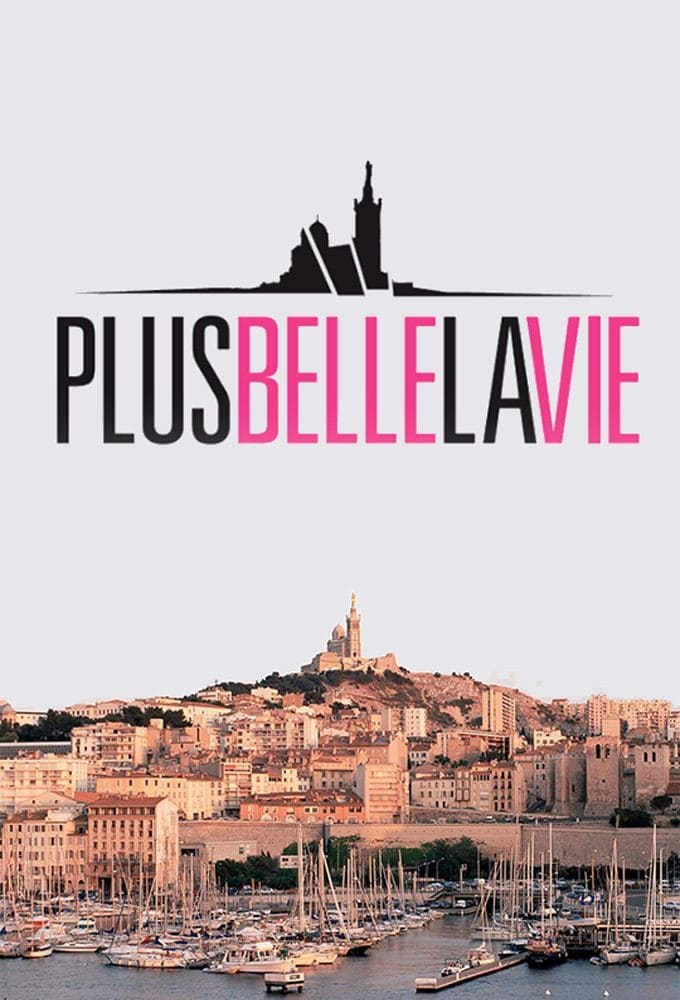

Matrix

Plus belle la vie met en scène jour après jour le quotidien des habitants d’un quartier fictif de Marseille, le Mistral.
Le feuilleton s’organise autour de deux principaux types d’intrigues :
La vie quotidienne des habitants du Mistral, avec leurs joies et tracas personnels, l’évolution des amours et des amitiés ;
Des intrigues policières (parfois teintées de fantastique) dans lesquelles sont impliqués les habitants du Mistral.